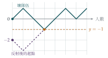

STEP I 2011，第 12 題
繼續之前，請先閱讀題目（原題為英文）。題目載於 STEP Support Programme 的題目資料庫： step.maths.org/questions/11-s1-q12
引子
這個規律實在叫人難以抗拒：\(\frac{m}{m+1}\)、\(\frac{m-1}{m+1}\)、\(\frac{m-2}{m+1}\)。若有 \(n\) 個人拿着 £2 硬幣，答案想必就是 \(\frac{m - n + 1}{m + 1}\)。事實正是如此，而最巧妙的證明（proof）用上了組合數學（combinatorics）中數一數二優雅的想法：反射原理（reflection principle）。它把圖形的一部分沿一條直線反射，從而將一個困難的計數問題（從不缺零錢找贖的隊伍有多少種）變成一個容易的計數問題。
同一個問題有許多不同的面貌：點票過程中勝出者從未落後的選舉（1887 年的伯特蘭投票問題（Bertrand’s ballot problem））、永不破產的賭徒、正確配對的括號。當 \(m = n\) 時，數出來的就是卡塔蘭數（Catalan numbers），這大概是組合數學中除二項式係數（binomial coefficients）以外最常出現的數列（sequence）。
動筆之前
每位拿 £1 的顧客會給你一枚硬幣；每位拿 £2 的顧客會取走一枚（作為找贖）。你甚麼時候會無法繼續？
留意你手上 £1 硬幣的數目。每來一位 £1 顧客，數目加 \(1\)；每來一位 £2 顧客，數目減 \(1\)。你無法繼續的情況，恰好就是一位 £2 顧客來到而你手上沒有硬幣：數目會變成 \(-1\)。所以你能成功，當且僅當（if and only if）在隊伍中的每一刻，到目前為止的 £1 顧客人數都不少於到目前為止的 £2 顧客人數。
逐步解題
階段 1 一枚 £2 硬幣
當 \(n = 1\) 時，只有 £2 顧客排第一才會失敗。£2 顧客排在 \(m + 1\) 個位置中任何一個的可能性均等，所以 \[\mathrm{P}(\text{成功}) = 1 - \frac{1}{m + 1} = \frac{m}{m + 1}. \qed\]
階段 2 兩枚 £2 硬幣
第一個人必須拿着 £1 硬幣。第二個人可以出現甚麼情況？在每種情況下，你餘下面對的是甚麼局面？
第一個人拿着 £1 硬幣的概率（probability）是 \(\frac{m}{m+2}\)；否則你立即失敗。這時你手上有一枚硬幣，而餘下的隊伍有 \(m - 1\) 個 £1 的人和兩個 £2 的人。
若第二個人拿着 £1 硬幣（概率為 \(\frac{m-1}{m+1}\)），你手上便有兩枚硬幣，無論兩枚 £2 硬幣何時出現都足夠找贖。成功是必然的。
若第二個人拿着 £2 硬幣（概率為 \(\frac{2}{m+1}\)），你手上又變回沒有硬幣，餘下 \(m - 1\) 個 £1 的人和一個 £2 的人。根據第 (i) 部分，以 \(m - 1\) 代替 \(m\)，你成功的概率是 \(\frac{m-1}{m}\)。
所以 \[\mathrm{P}(\text{成功}) = \frac{m}{m + 2}\Bigl(\frac{m - 1}{m + 1} + \frac{2}{m + 1}\cdot\frac{m - 1}{m}\Bigr) = \frac{m}{m + 2}\cdot\frac{m - 1}{m + 1}\cdot\frac{m + 2}{m} = \frac{m - 1}{m + 1}. \qed\]
試用同樣的方法處理 \(n = 3\)。這是行得通的，但情況會愈分愈多。有沒有方法可以一次過數出所有成功的隊伍？
階段 3 把隊伍看成路徑
以你手上的硬幣數目對已服務的人數作圖。一條隊伍看起來是甚麼樣子？一條成功的隊伍又是甚麼樣子？
一條隊伍就是一條路徑，由 \(m\) 步上升（£1）和 \(n\) 步下降（£2）組成，從高度 \(0\) 出發，終於高度 \(m - n\)。這樣的路徑共有 \(\binom{m + n}{n}\) 條，每條出現的可能性均等。一條隊伍成功，恰好就是它的路徑從不低於 \(0\)。所以我們需要數出壞路徑，即那些觸及高度 \(-1\) 的路徑。
階段 4 反射
取一條壞路徑。找出它第一次觸及 \(-1\) 的時刻，把路徑在這一刻之前的部分沿直線 \(y = -1\) 反射。新的路徑從哪裏開始，又在哪裏結束？
反射後的路徑從 \(-2\) 出發（即 \(0\) 對直線 \(y = -1\) 的鏡像），終點與原來的路徑相同，即 \(m - n\)（圖 9.10.1）。反過來說，每條由 \(-2\) 到 \(m - n\) 的路徑都必定在某處穿過 \(y = -1\)（因為 \(m \geq n\)，它起點在這條線之下，終點在這條線之上）；把它第一次到達這條線之前的部分反射，便得回一條由 \(0\) 出發的壞路徑。所以由 \(0\) 出發的壞路徑，與由 \(-2\) 到 \(m - n\) 的所有路徑恰好一一對應。
一條以 \(m + n\) 步由 \(-2\) 走到 \(m - n\) 的路徑共上升了 \(m - n + 2\)，所以它有 \(m + 1\) 步上升和 \(n - 1\) 步下降：這樣的路徑有 \(\binom{m + n}{n - 1}\) 條。因此 \[\mathrm{P}(\text{失敗}) = \frac{\binom{m + n}{n - 1}}{\binom{m + n}{n}} = \frac{n!\,m!}{(n - 1)!\,(m + 1)!} = \frac{n}{m + 1},\] 而 \[\mathrm{P}(\text{成功}) = 1 - \frac{n}{m + 1} = \frac{m - n + 1}{m + 1}.\] 當 \(n = 3\) 時，這就是 \(\frac{m - 2}{m + 1}\)。■

回顧
找出合適的狀態。唯一要緊的是手上硬幣的數目，這把隊伍變成了一次遊走。
以最初幾步為條件。第 (i) 和第 (ii) 部分的做法，是考慮最初幾個人的情況，從而化約為較小的情形。
用雙射（bijection）數出補集。壞路徑難以直接數出，但反射把它們與一個容易數算的集合配對起來。
背後的數學
卡塔蘭數
當 \(m = n\)（£1 硬幣剛好足夠）時，成功隊伍的數目是 \[\binom{2n}{n} - \binom{2n}{n - 1} = \frac{1}{n + 1}\binom{2n}{n},\] 即第 \(n\) 個卡塔蘭數 \(C_n\)：\(1, 1, 2, 5, 14, 42, 132, \ldots\)。Richard Stanley 的著作 Catalan Numbers 列出了超過二百種由卡塔蘭數計算數目的事物。其中包括：把 \(n\) 對括號正確排列的方法數目（「\((())()\)」是允許的，「\(())(()\)」則不允許，理由正是上述的硬幣論證，只要把「\((\)」看成 £1、「\()\)」看成 £2）、用互不相交的對角線把一個 \(n + 2\) 邊形分割成三角形的方法數目，以及為 \(n + 1\) 個因子的乘積加上括號的方法數目。
隨機遊走
隊伍就是隨機遊走（random walk），而反射原理是研究隨機遊走的基本工具之一。舉例說，它可以證明由 \(0\) 出發的公平隨機遊走必定終會返回 \(0\)，也可以證明它在最初 \(2n\) 步一直保持嚴格為正的概率是 \(\frac{1}{2}\binom{2n}{n}2^{-2n} \approx \frac{1}{2\sqrt{\pi n}}\)。在連續的形式下，把同樣的反射論證應用於布朗運動（Brownian motion），便可得出其最大值的分佈（distribution）。這是某些金融期權定價的基礎，這類期權的回報取決於股價有否越過某個界限。
1887 年，約瑟夫·伯特蘭（Joseph Bertrand）提出：在一場選舉中，候選人 \(A\) 得 \(a\) 票，\(B\) 得 \(b < a\) 票，那麼 \(A\) 在整個點票過程中一直嚴格領先的概率是多少？答案是 \(\frac{a - b}{a + b}\)，同年由 Désiré André 證明，他的論證通常被視為反射原理（不過歷史學家指出，André 實際的證明用的是一個稍有不同的雙射）。我們的抽獎券問題是一個容許平手的變體：成功的意思是 £1 的數目從不低於 £2 的數目。其中一道練習會由我們的答案推導出伯特蘭的答案。
思維技巧
要數算一個集合，就找出它與一個你懂得數算的集合之間的一一對應（one-to-one correspondence）。
反射把壞隊伍與由另一個起點出發、不受限制的路徑配對起來。雙射是組合數學中最令人滿足的證明，因為它們解釋了兩個數為何相等，而不只是證明它們相等。在大學裏，你會在組合數學中處處遇到雙射證明，也會在研究隨機遊走和布朗運動時再次遇上反射原理。
延伸練習
分情況處理三枚。仿照第 (ii) 部分，以隊伍中最初幾個人為條件來證明第 (iii) 部分，看看反射原理省卻了多少工夫。
伯特蘭投票問題。在一場選舉中，\(A\) 得 \(a\) 票，\(B\) 得 \(b < a\) 票。證明 \(A\) 在整個點票過程中一直嚴格領先的概率是 \(\frac{a - b}{a + b}\)。（提示：第一票必須投給 \(A\)；此後，\(A\) 落後於 \(B\) 的票數絕不可多於…。）
括號。列出三對括號的 \(5\) 種正確排列，以及把五邊形分割成三角形的 \(5\) 種方法。你能找出兩者之間的一個雙射嗎？
一張 £5 紙幣。一條隊伍中有 \(m\) 個人拿着 £1 硬幣，\(n\) 個人拿着 £5 紙幣，而一張票的價錢是 £1。解釋為何反射原理不再給出簡單的答案。（這個推廣困難得多。）
延伸閱讀
William Feller, An Introduction to Probability Theory and Its Applications, Vol. 1（Wiley），第 III 章。有關隨機遊走和反射原理的經典論述。
Richard Stanley, Catalan Numbers（Cambridge University Press）。超過二百種詮釋，並附練習。
Marc Renault, “Lost (and found) in translation: André’s actual method and its application to the generalized ballot problem”，American Mathematical Monthly 115 (2008)。反射原理的歷史。